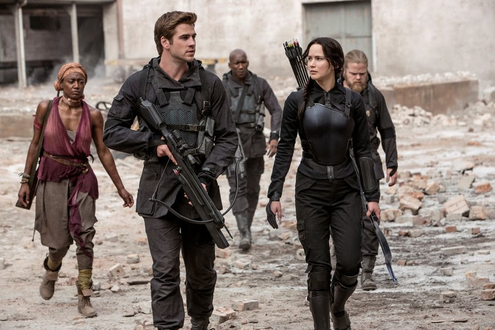
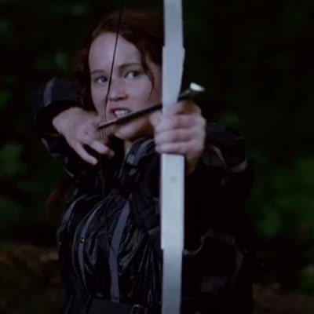

While I was conducting my research, I found multiple media sources that believe the Hunger Games series is a dangerous, bad series to read and watch.
Washington Post

According to the Washington Post, the overall message gave throughout the series is dangerous. The Hunger Games series promotes ideas of "mass revolution, economic sabotage and the populist fight against oligarchy". According to the article, protesters have adapted the 3-finger symbol used in the Hunger Games series as a sign of rebellion. In addition, leaders all over the world are declaring that they want Hunger Games to "stir up a revolution". Therefore, the Hunger Games series has caused multiple problems and is leading the world to revolution.
The New Republic

Writer for The New Republic, David Thomson, expresses his personal view on the Hunger Games series and lists the reasons why he hates the Hunger Games series. Thomson states,"Even now, I can see that the plot motif, of teenagers in a contest where they must kill one another, might threaten sentimental ideas of what children are or ought to be. But the only way this movie takes on that issue is to disguise it". This is a statement that is completely true. The Hunger Games series revolves entirely around children killing one another for the pleasure of the rich.